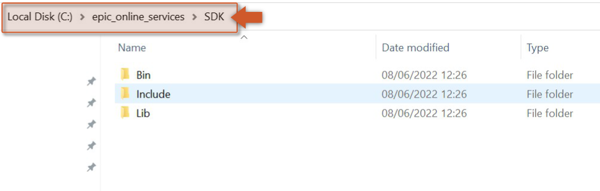
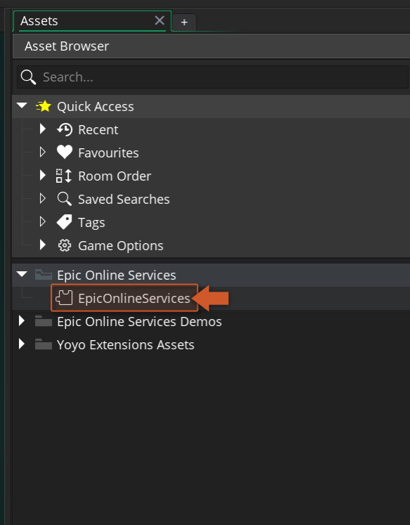
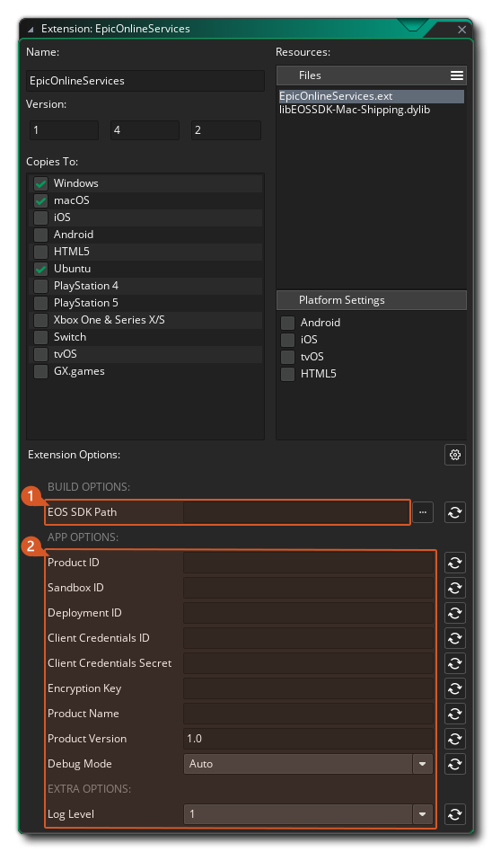

Getting Started
To use the Epic Online Services extension, follow these steps:
- Import this Epic Online Services extension into your project, if you haven't done that already.
- The Epic Games Launcher needs to be installed, running, and with an account logged in (official site) while testing from the IDE.
- Download the Epic Online Services SDK (C version) from Epic's
Developer Portal and extract it into a directory of your
choice (e.g.
C:\epic_online_services\SDK).
- To configure the extension, double click on the EpicOnlineServices extension in your Asset Browser in
the IDE.

- At the bottom of the extension window you'll find every configurable option, grouped into Build
Options, App Options, Extra Options, and Android.

The EOS SDK Path options should point at the folder(s) you extracted in step 3. The Product Name, Product Version, Product ID, Sandbox ID, and Deployment ID app options must all be set, found on the Dev Portal. Full details on every option: Extension Options.
Note
If you set Debug Mode to Enabled, your app will never be relaunched through the Epic
Launcher by eos_platform_check_for_launcher_and_restart. Only use this to hand a standalone
build to someone for testing - never ship a store build with it Enabled.
Initializing
Initializing this extension is two calls, made once at the start of your game (e.g. a persistent controller object's Create event):
var _init = eos_api_initialize("MyGame", "1.0.0");
if (_init != EpicResult.Success)
{
show_debug_message("EOS init failed: " + eos_api_last_error());
return;
}
var _platform = eos_platform_create(working_directory);
if (_platform != EpicResult.Success)
{
show_debug_message("Platform creation failed: " + eos_api_last_error());
return;
}
eos_api_initialize starts the SDK itself; eos_platform_create then creates the
platform handle every other module needs, reading your Product ID/Sandbox ID/Deployment
ID/Client Credentials ID/Client Credentials Secret straight from the extension options you set
above - you don't pass them in code. Check eos_api_last_error whenever either call doesn't
return EpicResult.Success.
Warning
Register any persistent add_notify_* callback (Auth, Connect,
Friends, etc.) only AFTER eos_platform_create succeeds. Each interface's notify
registration silently no-ops (returns an invalid notification ID) until the platform exists.
Ticking and shutting down
eos_platform_tick drives the SDK - call it every step, or nothing will ever complete or fire a callback:
/// Step Event
eos_platform_tick();
Call eos_api_shutdown once, when your game closes - it releases the platform handle for you:
/// Game End Event / Clean Up Event
eos_api_shutdown();
Handling launcher requirements
Most login flows expect your game to have been launched through the Epic Games Launcher. Call eos_platform_check_for_launcher_and_restart once, after the platform is created, to relaunch through the launcher automatically if it wasn't:
if (eos_platform_check_for_launcher_and_restart() == EpicResult.Success)
{
game_end();
}
See Logging In for the full login flow once your platform is up and running.